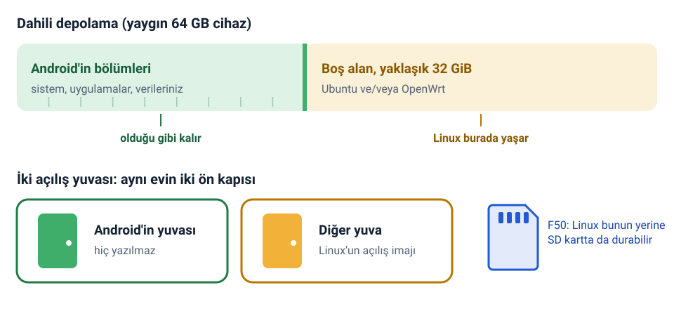
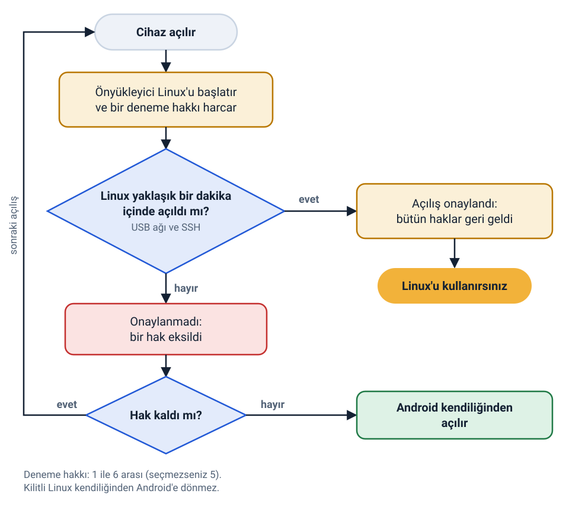
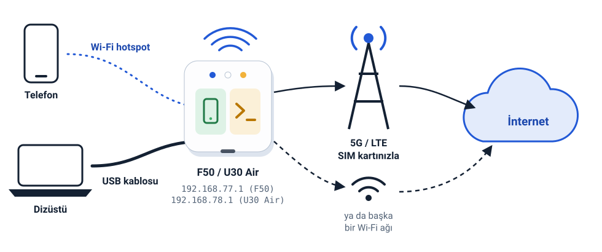

5G hotspot'unuz bir Linux bilgisayarı
ZTE F50 / MU300 ve ZTE U30 Air'e Android'in yanına Ubuntu ya da OpenWrt kurun. SSH, Wi-Fi, Bluetooth ve 5G modem çalışır. Android yerinde kalır; Linux bir gün açılamazsa cihaz kendiliğinden Android'e döner.

Bu nedir?
ZTE F50, içine SIM kart takılan ve 5G interneti Wi-Fi ile paylaşan küçük bir kutudur. İçinde Android çalıştıran küçük bir bilgisayar vardır. Bu proje, Android'in yanına gerçek bir Linux sistemi kurar.
Onu içinde zaten bir 5G modem, bir Wi-Fi erişim noktası ve 32 GB depolama olan bir Raspberry Pi gibi düşünün. ZTE U30 Air aynı kart ve çipin pilli hâlidir; o da desteklenir.
Neden isteyesiniz?
- Kontrolü sizde bir 5G yönlendiriciLuCI web arayüzlü OpenWrt, bir güvenlik duvarı ve kendi kurallarınız; hotspot'taki her telefon ve dizüstü için.
- Cebinizde bir sunucusystemd ve
aptile Ubuntu 24.04 ya da 26.04 LTS: kendi internet bağlantısı olan kendi servisleriniz. - Konuşabildiğiniz bir modemSMS okuyun ve gönderin, USSD kodları gönderin; kontrol panelinde bant ve hücre kilitleyin.
- Arkasındaki her şey için bir VPNWireGuard, OpenVPN, VLESS ve dahası, kill switch ile, isteğe bağlı bir modül olarak.
Neler çalışıyor
- Mobil veri, 5G NSA ve LTEWi-Fi ve USB istemcileriyle paylaşılır; modem sıfırlanınca kendiliğinden yeniden bağlanır.
- Wi-Fi hotspot5 GHz (802.11ac) ya da 2.4 GHz, aynı anda biri.
- Wi-Fi istemcisiBaşka bir ağa katılın (WPA2, WPA2/WPA3 karma) ve onu USB'den paylaşın.
- USB ağı ve SSHBir bilgisayara takın, ağ bağdaştırıcısı olarak görünür.
- SMS ve USSDKomut satırında
smsvemu300-ussd, ayrıca kontrol panelinde. - VPNWireGuard, OpenVPN, VLESS, VMess, Trojan, Shadowsocks, Clash/mihomo profilleri; tünel üzerinden Tailscale.
- Üç çekirdekUnisoc'un üretici çekirdeği 5.4, ana hat 6.18 LTS ve ana hat 7.2; üçünde de KVM.
- Bluetooth ve GPUBlueZ ve OpenCL için Mali-G57 (görüntü çıkışı yok).
- Android yerinde kalırTek komutla geri dönülür, başarısız açılışlar kendiliğinden Android'e döner.
- Ekran yok, ses yokUSB-C görüntü çıkışı çalışmaz, kartta hoparlör ve mikrofon yoktur.
Desteklenen cihazlar
| ZTE F50 / MU300 | ZTE U30 Air | |
|---|---|---|
| Çip | Unisoc T760 (UMS9620) | aynısı |
| Güç | yalnızca USB | pil (4050 mAh), şarj devresi ve pil göstergesi |
| USB ağ adresi | 192.168.77.1 | 192.168.78.1 |
| SD kart | Linux dahili depolama yerine kartta durabilir | kart yuvası yok |
| Ekstralar | durum LED'leri | durum LED'leri, pil bilgileri, NFC etiketi, OTG adaptörüyle USB host (ana hat çekirdekler) |
Kurulum programı hangisi olduğunu Android'den okur; elle seçmeniz gerekmez. U30 Pro farklı bir çiptir (UMS9632) ve desteklenmez. Cihazların çoğunda 64 GB dahili depolama vardır; 32 GB sürümde her şeyden önce kontrol adımını okuyun.
Nasıl çalışır, bir masal gibi
Önemli olan her şeyi dört küçük resim anlatıyor.
1. Tek ev, iki oda
Cihazınız bir ev gibidir. Android bir odada, bütün eşyalarıyla zaten yaşıyor. Yaygın 64 GB cihazda kimsenin kullanmadığı ikinci, boş bir oda daha var: Android'in bölümlerinden sonra yaklaşık 32 GiB'lık depolama. Linux o boş odaya taşınır. Android'in odasındaki hiçbir şey yerinden oynamaz, değişmez.
Evin iki ön kapısı da vardır: bunlara A ve B açılış yuvaları (slot) denir. Android bunlardan birini kullanır. Kurulum programı Linux'un kapısını, yani açılış imajını, diğerine koyar.

2. Her açılış bir denemedir
Cihaz Linux'u her başlattığında bunu bir deneme sayar ve bir hak harcar. Linux açılınca (USB ağı ve SSH çalışınca) cihaza "bu açılış iyiydi" der ve bütün haklar geri gelir. Linux açılmazsa harcanan hak gider. Arka arkaya 5 başarısız açılıştan sonra (1 ile 6 arasında siz seçersiniz) cihaz bu kez Android'i başlatır. Yanlışlıkla kendinizi dışarıda bırakamazsınız.

3. Android'e dönmek tek komut
Linux'tayken bir sonraki açılışta Android'i isteyin ve yeniden başlatın:
sudo mu300-next-boot android
sudo rebootAndroid'deyken Linux, su -c mu300-linux ile ya da kurulum programının eklediği "MU300 Linux" Magisk
modülünün Action düğmesiyle geri gelir. Linux'u kalıcı olarak kaldırmak için bilgisayarınızdan kaldırma programını
çalıştırın. Bunların hepsi güncelleme ve güvenlik sayfasında (İngilizce).
4. Masanızda kendi ağınız
Telefonlar ve dizüstüler cihazın Wi-Fi hotspot'una katılır ya da USB'sine takılır. Cihaz onları SIM kartınızla 5G
veya LTE üzerinden ya da katıldığı başka bir Wi-Fi ağı üzerinden internete çıkarır. USB üzerinden bilgisayarınız
cihazın kendisine 192.168.77.1 (F50) ya da 192.168.78.1 (U30 Air) adresinden ulaşır.

Hızlı başlangıç
Windows, macOS ya da Linux'ta, cihaz root'lu ve USB ile bağlıyken yaklaşık 15 dakika. Kurulum rehberi her soruyu tek tek anlatır.
Kontrol
./install.sh --checkcihazı yalnızca okur ve Linux'un sığıp sığmadığını, nereye sığdığını söyler.Kurulum
./install.shbirkaç soru sorar, ne yazacağını gösterir veINSTALLyazmanızı bekler.Giriş
Yaklaşık bir dakika sonra:
ssh ubuntu@192.168.77.1, OpenWrt içinhttp://192.168.77.1.
git clone https://github.com/dikeckaan/mu300-linux
cd mu300-linux
MU300_LANG=tr ./install.sh --check # yalnızca okur, hiçbir şey yazmaz
MU300_LANG=tr ./install.sh # Windows: .\install.ps1 -Lang trMU300_LANG=tr (Windows'ta -Lang tr) kurulum programını doğrudan Türkçe başlatır;
yazmazsanız başta dili sorar.
Karşılığında neyi kaybedersiniz
- Android ve Linux cihazı paylaşır. Aynı anda yalnızca biri çalışır; yeniden başlatma aralarında geçiş yapar.
- Görüntü çıkışı yok. SSH ya da bir web sayfası üzerinden kullandığınız ekransız bir makinedir.
- Ses yok. Kartta hoparlör ve mikrofon yoktur; sesli aramalar çalışmaz.
- Yaklaşık 1.4 GB RAM. Geri kalanın çoğu modem yazılımına ayrılmıştır.
Bu, boş zamanlarda yapılmış deneysel bir projedir. Bir ürün değildir, destek hattı yoktur ve hiçbir garantisi yoktur. Telefon sınıfı bir cihaza yazmak onu kullanılamaz hâle getirebilir; root'lama, kilit açma ve kurtarma araçları bu projenin dışındadır. Yedek alın ve kaybetmeyi göze alamayacağınız bir cihaza kurmayın. Cihazınızın gönderdiklerini değiştirmek (TTL, bant kilidi, VPN) operatörünüzün koşullarına ya da yerel yasalara aykırı olabilir. Tam metin README'de.
Sık sorulan sorular
Linux kurmak Android'i ya da verilerimi siler mi?
Yaygın 64 GB cihazda hayır. Linux, hiçbir bölüme ait olmayan yaklaşık 32 GiB'lık alana kurulur; Android'in bölümlerine, verilerine ve bölüm tablosuna hiç yazılmaz. Kurulum yalnızca bir açılış bölümüne (Android'in kullanmadığı yuvaya) ve misc'in 32 baytına yazar.
İstisna 32 GB sürümdür: onda hiç boş alan yoktur. Orada bir SD kart kullanabilir (F50) ya da kurulum programının userdata'yı küçültmesine izin verebilirsiniz; bu, Android'deki her şeyi siler. Bu yol deneyseldir ve önce ERASE yazmanızı ister.
Önce cihazı root'lamam gerekiyor mu?
Evet. Cihaz zaten root'lu ve kilidi açık olmalı: değiştirilmiş bir Android açılış imajıyla açılabiliyor ve USB hata ayıklama açık olmalı. Bu noktaya gelmek projenin parçası değildir; o araçların kendi talimatlarıyla ve kendi sorumluluğunuzda yaparsınız.
Linux açılmazsa ne olur?
Cihaz kendiliğinden Android'e döner. Linux'un her açılışı bir denemedir; arka arkaya 5 kez başarısız olursa (kurulumda 1 ile 6 arasında seçersiniz) bir sonraki açılış Android olur. Ayrıntılar güvenlik ağı bölümünde (İngilizce).
Android'e nasıl dönerim?
Linux'tan: sudo mu300-next-boot android, ardından sudo reboot. Linux'u tamamen kaldırmak için cihaz Android'deyken ./uninstall.sh (Windows: .\uninstall.ps1) çalıştırın. Android'den su -c mu300-linux Linux'u yeniden başlatır.
Ubuntu mu OpenWrt mi, hangisini seçmeliyim?
Çoğunlukla web arayüzlü bir yönlendirici istiyorsanız OpenWrt; apt ile küçük bir sunucu istiyorsanız Ubuntu. İkisini birden kurup mu300-os ile geçiş de yapabilirsiniz. Sistem seçimi sayfası (İngilizce) bunu üç çekirdekle birlikte anlatır.
ZTE U30 Pro destekleniyor mu?
Hayır. U30 Pro'da farklı bir çip (UMS9632) var. Desteklenenler ZTE F50 / MU300 ve ZTE U30 Air'dir; ikisi aynı kartı ve çipi paylaşır, kurulum programı hangisiyle konuştuğunu kendisi tanır.
Bilgisayarsız kurabilir miyim?
Evet, cihaz zaten Magisk 26 veya daha yenisiyle root'lu bir Android çalıştırıyorsa: her sürümde, her sistem ve çekirdek için bir tane olmak üzere, Magisk uygulamasından kurulan Magisk zip'leri vardır. Kontrol panelli OpenWrt yalnızca bilgisayardaki kurulum programıyla gelir. Bkz. Magisk zip'iyle kurulum.
Linux'u SD karta kurabilir miyim?
F50'de evet: yuvada en az 700 MiB'lık bir kart varsa kurulum programı Linux'un oraya gidip gitmeyeceğini sorar. U30 Air'de kart yuvası yoktur.
Ekran ya da ses var mı?
Hayır. USB-C üzerinden HDMI çalışmaz, kartta hoparlör ve mikrofon yoktur. Cihazı SSH, bir web arayüzü ya da seri konsol üzerinden kullanırsınız.
Ücretli mi?
Hayır. Betikler ve belgeler MIT lisanslıdır, çekirdekler GPL-2.0'dır. Sürüm imajlarında tescilli dosya yoktur: kurulum programı Wi-Fi ve modem dosyalarını sizin cihazınızdan kopyalar.
Buradan nereye
- Kurulum rehberi: yeni başlayanlar için her adım ve her soru.
- Sistem seçimi (İngilizce): Ubuntu, OpenWrt ya da kontrol paneli, ve hangi çekirdek.
- Özellikler (İngilizce): mobil veri, hotspot, Wi-Fi istemcisi, SMS, VPN, pil ve LED'ler.
- Güncelleme ve güvenlik (İngilizce): güncelleme, geri alma, Android'e dönüş, kaldırma.
- Sorun giderme (İngilizce): bilinen sorunlar ve çözümleri.
- Wiki (İngilizce): her teknik kelimenin sözlüğü ve daha ayrıntılı sayfalar.